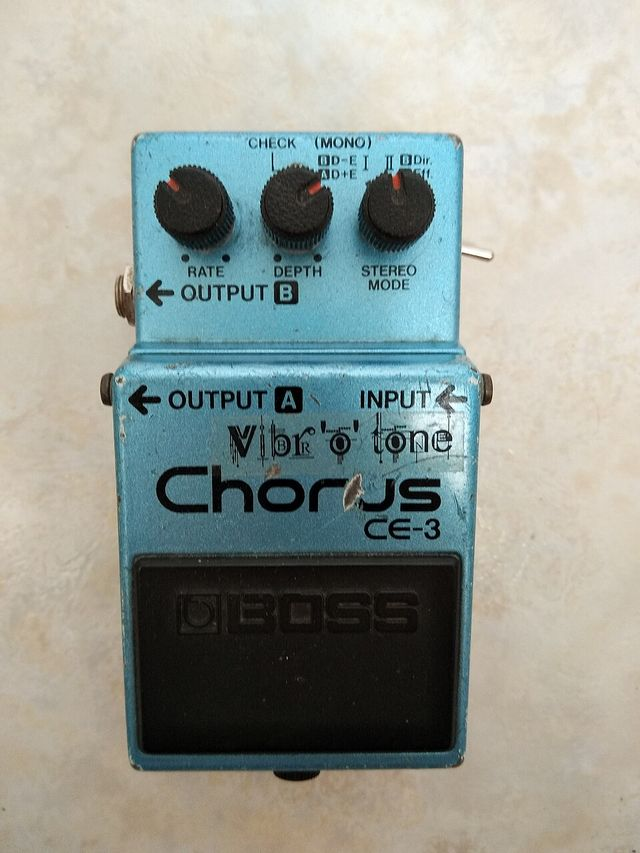

Scheda 090 · 1982 · Giappone
Boss CE-3 Chorus
Nel 1979 il chorus di Boss perde lo stereo per stare in un pedale piccolo. Nel 1982 il CE-3 se lo riprende
Il terzo chorus di Boss, con 3 manopole e 2 uscite. Fatto in Giappone, poi a Taiwan, fino al 1992.
Il suono vero · 0:40
Un CE-3 vero, fatto in Giappone nel 1984 (la modifica che ha sopra è spenta), su una Yamaha Pacifica 112 con un amplificatore pulito simulato in Amplitube, in stereo: prima il modo II, poi il modo I.
0:00 / 0:40
Registrazione di Skimel · CC BY-SA 4.0 · Wikimedia Commons · estratto di 40 s, volume normalizzato
- USCITA
- 1982
- MANOPOLE
- 3
- USCITE
- 2, A e B
- MODI STEREO
- 2
La macchinaChe cos'è
Quello della foto è lo stesso che suona nella registrazione. Chi l'ha registrato l'ha datato dal numero di serie, agosto 1984, fatto in Giappone. L'adesivo «Vibr'o'tone» e la levetta sul fianco non sono di Boss, sono una modifica di MSM Workshop, spenta nella registrazione. Le manopole sono Rate, Depth e Stereo Mode, e le uscite 2, A sul fianco e B più in alto. La lucina CHECK sta fra le manopole, mezza nascosta, e a me questa cosa non è mai piaciuta. Del CE-2 parlano tutti. Il CE-3 è il fratello di mezzo, e secondo me suona meglio di quanto dica la sua fama.
Chi l'ha costruitaRoland e Boss, dal Jazz Chorus in giù
Chi l'abbia disegnato Boss non lo dice. La famiglia comincia nel 1975 col Jazz Chorus JC-120 di Roland, un amplificatore a transistor con 2 altoparlanti, 2 finali da 60 watt e il chorus dentro. Nel 1976 Boss stacca quel circuito e lo chiude in una scatola sua, il CE-1 Chorus Ensemble. È il primo pedale Boss e il primo chorus a pedale, grosso e attaccato alla corrente. Wikipedia in un punto lo data 1975, Boss e le riviste 1976. Nel 1979 arriva il CE-2, compatto, con 2 manopole e un chip Panasonic MN3007. Il CE-3 esce nel 1982. La storia dei pedali compatti Boss sta nella scheda del DS-1.
Come funzionaCosa c'è dentro
Dentro c'è un chip BBD, una fila di condensatori che si passano il segnale come secchi d'acqua e lo restituiscono con pochi millesimi di secondo di ritardo. Un oscillatore lento allunga e accorcia quel ritardo, e la copia sale e scende di intonazione di pochissimo. Rate decide quanto in fretta, Depth quanto. Sommata al suono diretto, la copia fa sembrare due chitarre. Nel modo I la presa A dà diretto più effetto, la B diretto meno effetto, e fra 2 amplificatori il suono si allarga. Nel modo II da A esce solo la copia che ondeggia e da B la chitarra pulita. Il chorus allora si forma nell'aria della stanza.
Chi l'ha usataNei dischi
- Gary Mooreun CE-3 sulla pedaliera Boss del tour del 1983
L'aneddotoUna storia
Gennaio 1983. Gary Moore è in tour e Tony Bacon lo intervista per Music UK. Moore racconta che il chorus della sua eco a nastro Roland non lo soddisfa, e allora si porta dietro un pedale Boss, insieme a un flanger e a un ottavatore. Poi ammette che il flanger lo accende una volta a sera e il chorus due. Quale chorus, nell'intervista non lo dice. Guitar Player, raccontando la sua pedaliera Boss di quell'anno, scrive CE-3, che era uscito da pochi mesi. Torna, ma io non lo darei per certo.
Avvertenze
Con un amplificatore solo, Stereo Mode su I. Sul II la presa A dà soltanto la copia che ondeggia, e il chorus non si forma.
Il carosello · si aprono in grande
Le 6 tavole
Da dove viene
Fonti
- «The Legend of the CE-1 and RE-201 Preamps» — BOSS verificata il 2026-11-13
- CE-3 Chorus, manuale d'uso — BOSS, 1987 verificata il 2026-11-13
- «1980 Boss CE-2 Chorus» — Crave Guitars verificata il 2026-11-13
- JC-120 e CE-1, Dave Hunter — Guitar Player, 2023 verificata il 2026-11-13
- «Classic Gear: Boss CE-1», Dave Hunter — Guitar Player, 2021 verificata il 2026-11-13
- Storia del CE-2, Chris Gill — Guitar World, 2025 verificata il 2026-11-13
- «Boss Corporation» — Wikipedia (EN) verificata il 2026-11-13
- «A decade of shimmer» — Happy Mag, 2021 verificata il 2026-11-13
- «Boss CE-3 Chorus» — mirosol, 2014 verificata il 2026-11-13
- «Gary Moore», Tony Bacon — Music UK, gennaio 1983 verificata il 2026-11-13
- La pedaliera di Gary Moore, Rod Brakes — Guitar Player, 2021 verificata il 2026-11-13
- «Gary Moore's Boss CE-3 Chorus» — Ground Guitar verificata il 2026-11-13
Foto: Skimel · CC BY-SA 4.0 · Wikimedia Commons
Foto nelle tavole: Skimel · CC BY-SA 4.0 · Wikimedia Commons
Foto nelle tavole: Skimel · CC BY-SA 4.0 · Wikimedia Commons
Foto nelle tavole: Skimel · CC BY-SA 4.0 · Wikimedia Commons
Suono: Registrazione di Skimel · CC BY-SA 4.0 · Wikimedia Commons · estratto di 40 s, volume normalizzato